The downstream analysis of transcriptomics data mainly consists of four steps and they are
Further, we need to make visualizations of the results identified.
As explained in the course overview, we will use transcriptomics data generated from SARS-Cov2 infected human blood samples and COVID-19 negative blood samples. Then we will compare the data (COVID-19 positive vs COVID-19 negative) to find genes regulated due to the infection and their functions in human.
As a first step, let us familiarize with the study design and the data.
We are re-using the data from a study published by the Systems Virology lab at Karolinska. The study aimed to investigate the metabolic signatures altered in humans upon COVID19. More details of the study can be found here. We are using the data of randomly selected 12 samples from COVID-19 negative and COVID-19 positive individuals. The data can be obtained from the this link
There you can see three files,
FeatureCounts after alignment
using STARDownload the three files and keep them inside your project folder.
For all this tutorial I am keeping a folder named
COVID_RNASeq as my project folder.
To download the files, you can click on each files, then it will be open in new window. On the right top corner you can find download link.
In the project, we are studying SARS-Cov2 viral infection. It is known that viral infection can trigger several antiviral and immune-syatem pathways in the host as well as metabolic pathways to generate energy. So here we are aim to find the anti-viral, immune-system & metabolic pathways altered in response to COVID-19 disease in humans.
As a first step lets have a look at the count data. As we learned, the count data is the number of reads originate from each gene. It will be whole number since it is count of something. The data will consists of different types of genes such as protein coding, non-coding, lincRNAs etc. The columns are sample IDs and row names are Gene IDs. First we will convert gene IDs to gene names. Then we will select only protein-coding genes. We will restrict all our downstream analysis to protein-coding genes. You can select the gene biotypes based on your objective.
First, open R studio and create a R markdown document
File -> New File -> R Markdown. The output format can
be pdf or html depends on your interest. Save the Markdown document in
your project folder where all the input files are.
library(biomaRt) # load the package to R environment to use its functionalities.
Count=read.delim("Raw_Read_Count.txt")
dim(Count) # this shows dimension of the data frame.
# creates a data base contaning the information about ensembl genes.
ensembl <- useEnsembl(biomart = "genes", dataset = "hsapiens_gene_ensembl")
# this step fetch gene names (hgnc_symbol) and biotype of the inputted gene IDs
GeneInfo <- getBM(attributes=c("ensembl_gene_id","hgnc_symbol","gene_biotype"), filters = "ensembl_gene_id", values = Count$Ensembl_ID, mart = ensembl)
dim(GeneInfo)
names(GeneInfo)[names(GeneInfo) == "ensembl_gene_id"] <- "Ensembl_ID"
# adding the fetched data to our original dataframe
MergedData=merge(Count,GeneInfo,by = "Ensembl_ID",all.x = FALSE)
# counting number of genes from each biotype
library(dplyr)
MergedData %>%
group_by(gene_biotype) %>%
summarise(Count = length(gene_biotype))
# Lets save the new count data with gene information
write.table(MergedData,file="CountData_GeneNames.txt",sep="\t",col.names = NA,quote = FALSE)# Selecting count data for protein coding genes. Using subset() function
ProtCoding=subset(MergedData, gene_biotype=="protein_coding")
dim(ProtCoding)
head(ProtCoding)
# We need to make a clean file for further analysis. The column should be sample Ids and rows should genes. Currently we have additional columns hgnc_symbol, gene_biotype. So we are going to correct it. Here we are defining new row names in the format "EnesebleID_GeneName" and delete other columns.
ProtCoding$ID_Name = paste(ProtCoding$Ensembl_ID, ProtCoding$hgnc_symbol, sep = "_")
# Now make the new column "ID_Name" as the row names and delete the unwanted "hgnc_symbol,gene_biotype,ensembl_gene_id".
rownames(ProtCoding) = ProtCoding$ID_Name
ProtCoding$Ensembl_ID = NULL
ProtCoding$ID_Name = NULL
ProtCoding$hgnc_symbol = NULL
ProtCoding$gene_biotype = NULL
# Lets have a look the final data frame.
head(ProtCoding)
# We are good to go. Lets save the final table too
write.table(ProtCoding,file="ProtCodingCount.txt",sep="\t",col.names = NA,quote = FALSE)Normalization of transcriptomics data (raw read count) is crucial before performing downstream analyses like PCA (Principal Component Analysis) and UMAP (Uniform Manifold Approximation and Projection). PCA & UMAP are used to study the sample distribution. Different normalization methods address various aspects of the data, such as library size differences, variability in gene expression, and technical biases. Most commonly used normalization methods are log2 scaled counts per million reads (log2 CPM), transcript per million reads (TPM), Trimmed Mean of M-values (TMM) and Variance Stabilizing Transformation (VST).
This normalization technique adjusts for differences in sequencing depth across samples by converting raw counts into counts per million reads, followed by a logarithmic transformation to stabilize variance. Specifically, it accounts for variations in library size by scaling the counts relative to the total number of reads in each sample, and it normalizes the data to a common scale, making it easier to compare gene expression levels across samples.
The log2 transformation further mitigates issues with skewed data distributions and reduces the influence of extreme values, allowing for more balanced statistical analyses. This method is particularly useful for downstream applications like Principal Component Analysis (PCA) and clustering, where variance stabilization and comparability across samples are crucial for accurate and meaningful results.
We are using funtions provided by the R packages Biobase
and edgeR
library(Biobase) # Loading the package
library(edgeR) # Loading the package
count=read.delim("ProtCodingCount.txt",row.names = 1,check.names = FALSE)
countX=as.matrix(count) # Converting the dataframe to matrix format.
des=read.delim("Design.txt",row.names = 1)
expSet=ExpressionSet(countX, phenoData=AnnotatedDataFrame(data=des)) # Creating a object of specific format.
expSet <- expSet[rowSums(exprs(expSet)) != 0, ] # to remove genes having zeros in all samples
log2cpm <- cpm(exprs(expSet), log = TRUE)
write.table(log2cpm,file="Log2CPM_ProtCoding.txt",sep="\t",quote = FALSE,col.names = NA)TPM normalization adjusts for both sequencing depth and gene length, offering a way to compare gene expression levels across samples and genes. This method first normalizes read counts by the length of each gene, converting them to a per-kilobase basis, and then scales these values to a common scale where the total expression in each sample sums to one million.
This approach accounts for differences in library sizes and ensures that gene expression values are comparable across samples, regardless of the sequencing depth. The TPM normalization method also facilitates meaningful comparisons between genes of varying lengths, as it removes length bias from the raw counts. This makes TPM particularly effective for analyzing and visualizing gene expression profiles, providing a consistent basis for downstream analyses like differential expression studies and clustering, where balanced representation across samples and genes is essential.
TPM normalization cannot be performed directly on raw read count, accurately. We need to perform read alingment at the resolution individual transcript for TPM computation. Note that, here we performed alignment against each gene, not transcripts. There are specific tools that provide accurate computation of TPM values. Here it is already performed using the tool kallisto and data is availble to download (TPM_Count.txt)
So we just subset protein coding genes from the data set.
library(biomaRt) # load the package to R environment to use its functionalities.
Count=read.delim("TPM_Count.txt")
dim(Count) # this shows dimension of the data frame.
# creates a data base contaning the information about ensembl genes.
ensembl <- useEnsembl(biomart = "genes", dataset = "hsapiens_gene_ensembl")
# this step fetch gene names (hgnc_symbol) and biotype of the inputted gene IDs
GeneInfo <- getBM(attributes=c("ensembl_gene_id","hgnc_symbol","gene_biotype"), filters = "ensembl_gene_id", values = Count$Ensembl_ID, mart = ensembl)
dim(GeneInfo)
names(GeneInfo)[names(GeneInfo) == "ensembl_gene_id"] <- "Ensembl_ID"
# adding the fetched data to our original dataframe
MergedData=merge(Count,GeneInfo,by = "Ensembl_ID",all.x = FALSE)
# Lets save the new count data with gene information
write.table(MergedData,file="TPM_GeneNames.txt",sep="\t",col.names = NA,quote = FALSE)
# Selecting count data for protein coding genes. Using subset() function
ProtCoding=subset(MergedData, gene_biotype=="protein_coding")
ProtCoding$ID_Name = paste(ProtCoding$Ensembl_ID, ProtCoding$hgnc_symbol, sep = "_")
# Now make the new column "ID_Name" as the row names and delete the unwanted "hgnc_symbol,gene_biotype,ensembl_gene_id".
rownames(ProtCoding) = ProtCoding$ID_Name
ProtCoding$Ensembl_ID = NULL
ProtCoding$ID_Name = NULL
ProtCoding$hgnc_symbol = NULL
ProtCoding$gene_biotype = NULL
# Lets have a look the final data frame.
head(ProtCoding)
# We are good to go. Lets save the final table too
write.table(ProtCoding,file="ProtCodingTPM.txt",sep="\t",col.names = NA,quote = FALSE)TMM (Trimmed Mean of M-values) normalization is a method used in RNA-seq data analysis to correct for compositional biases and differences in library sizes across samples. It works by calculating normalization factors based on the trimmed mean of log-ratios of gene expression between samples, which mitigates the impact of extreme values and outliers. This ensures that gene expression levels are comparable across samples, making TMM particularly effective for accurate differential expression analysis and reducing biases due to varying library compositions.
Here also we are using function provided by R package
edgeR
library(edgeR)
count=read.delim("ProtCodingCount.txt",row.names = 1,check.names = FALSE)
countX=as.matrix(count) # Converting the dataframe to matrix format.
# Create a DGEList object
dge <- DGEList(counts = countX)
# Calculate normalization factors using TMM
dge <- calcNormFactors(dge)
# Get normalized counts
TMM_counts <- cpm(dge, normalized.lib.sizes = TRUE)
# Save the data to a file
write.table(TMM_counts,file="TMM_ProtCodingCount.txt",sep="\t",quote = FALSE,col.names = NA)VST (Variance Stabilizing Transformation) normalization transforms RNA-seq data to stabilize variance across gene expression levels. By applying a log transformation and adjusting for variance, VST makes data more comparable and suitable for downstream analyses like PCA and clustering, reducing the impact of variability in low-count genes.
We are using function provided by R package DESeq2
library(DESeq2)
count=read.delim("ProtCodingCount.txt",row.names = 1,check.names = FALSE)
countX=as.matrix(count) # Converting the dataframe to matrix format.
des=read.delim("Design.txt",row.names = 1)
# Create a DESeqDataSet object
dds <- DESeqDataSetFromMatrix(countData = countX, colData = des, design = ~ Group)
# Perform VST normalization
vsd <- vst(dds, blind = FALSE)
# Access the VST transformed data
VST_counts <- assay(vsd)
write.table(VST_counts,file="VST_ProtCodingCount.txt",sep="\t",quote = FALSE,col.names = NA)Sample distribution estimation involves analyzing and summarizing the underlying distribution of data points within a dataset. Accurate estimation of sample distributions helps in identifying patterns, detecting outliers, and ensuring that the dimensionality reduction effectively captures the intrinsic relationships between data points. In PCA, it helps in determining the variance explained by each principal component, while in UMAP, it aids in preserving the local and global structure of the data during projection to lower dimensions. Proper distribution estimation enhances the reliability of these analyses by providing a clear picture of data spread and density.
Principal Component Analysis (PCA) is a dimensionality reduction technique that transforms high-dimensional data into a lower-dimensional space while retaining the most variance. It identifies the principal components—orthogonal vectors that capture the maximum variance in the data. PCA simplifies the dataset by projecting it onto these principal components, making it easier to visualize and analyze complex data patterns.
We use the R package PCAtools. The PCA reduced the total
dimensions of the data to a few number. So that we can plot the reduced
dimensions on a 2-dimensional space, simply a x-y scatter plot to
visualize the sample distribution.
library(PCAtools)
# First let's use TPM data to create PCA
TPMprot=read.delim("ProtCodingTPM.txt",row.names = 1,check.names = FALSE)
Design=read.delim("Design.txt",row.names = 1)
p <- pca(TPMprot, metadata = Design, removeVar = 0.1,scale = TRUE)
# The function pca() returns an object of class pca. To check the elements of the object. Use names() function below.
names(p)## [1] "rotated" "loadings" "variance" "sdev" "metadata" "xvars" "yvars" "components"# To see what each elements, we can read the manual of the function. The manual of any function in R can be seen using "?" as shown below.
?pca
# Check the percentage variance captured by each PCs. The sum of variances should be 100.
as.data.frame(p$variance)## p$variance
## PC1 4.651474e+01
## PC2 8.598058e+00
## PC3 6.869512e+00
## PC4 5.621716e+00
## PC5 4.553358e+00
## PC6 3.743865e+00
## PC7 3.162258e+00
## PC8 3.038319e+00
## PC9 2.519139e+00
## PC10 2.264404e+00
## PC11 1.945224e+00
## PC12 1.821220e+00
## PC13 1.485242e+00
## PC14 1.271704e+00
## PC15 1.109436e+00
## PC16 9.727418e-01
## PC17 8.728597e-01
## PC18 8.410931e-01
## PC19 7.453625e-01
## PC20 7.363045e-01
## PC21 5.292819e-01
## PC22 4.129987e-01
## PC23 3.711604e-01
## PC24 5.037529e-28# Since the first two PCs captured most of the variances in the data. It should be enough to access the sample distribution. We can plot the PC1 in x-axis and PC2 in the y-axis.
#To plot the sample distribution as a x-y scatter plot, we need x and y cordinates of each samples. The cordinates of each samples in reduced dimensions will be stored in the element "rotated". We can get those and save that in an another data frame "PC_Cord".
PC_Cord=p$rotated
# Check the content
head(PC_Cord)## PC1 PC2 PC3 PC4 PC5 PC6 PC7 PC8
## COVID19_HC_06 -21.4290821 -3.576596 35.65486 18.799949 7.042755 -5.0455302 -1.3365204 -14.782931
## COVID19_HC_29 10.8007294 6.199259 76.05878 32.458661 17.445076 2.5740732 -2.2425231 2.331464
## COVID19_HC_01 -107.4546358 -1.656793 -24.34960 -36.018950 6.390799 -12.1169306 3.4434546 -14.625709
## COVID19_HC_22 -0.3464107 16.553542 49.21874 43.592968 9.725239 0.1949323 -0.7580144 -7.560328
## COVID19_HC_31 -50.4362687 -6.437384 18.37839 10.453884 4.046969 -7.3733931 -1.2338872 -11.113019
## COVID19_HC_25 -65.2708634 -6.095207 15.71600 -8.854693 7.737311 0.6230582 1.9323905 -2.025534
## PC9 PC10 PC11 PC12 PC13 PC14 PC15 PC16
## COVID19_HC_06 -2.756554 3.165437 -0.5879384 -10.59883632 -0.6413344 -1.1795916 20.233919 -22.683290
## COVID19_HC_29 24.250954 23.387331 -8.8728185 -0.04986246 30.4270156 46.2203327 -8.427841 3.341993
## COVID19_HC_01 -24.563463 -10.673246 19.7956089 -10.74944889 55.0996141 -0.7005147 13.830575 24.379038
## COVID19_HC_22 17.028226 15.192176 -10.7153206 -20.49866149 14.2912437 -57.2751752 -14.385177 10.239445
## COVID19_HC_31 -2.055098 -1.068822 -0.1112786 -9.26495239 -1.7830417 -4.0730789 11.348588 -29.501047
## COVID19_HC_25 -2.865792 -4.059834 5.0819548 -1.35517512 2.5012227 2.2006555 -20.403611 -6.393021
## PC17 PC18 PC19 PC20 PC21 PC22 PC23 PC24
## COVID19_HC_06 -17.537160 -4.5597794 -23.523288 36.826772 9.548331 -0.7102613 -1.7748676 3.125957e-13
## COVID19_HC_29 -12.225413 10.1386872 6.534336 -7.544116 -2.130088 -2.9985446 -0.3800524 3.125957e-13
## COVID19_HC_01 10.322705 -10.9850298 3.888018 7.953976 2.450926 0.7415060 -1.5460978 3.125957e-13
## COVID19_HC_22 -4.297033 8.9752347 4.259614 -3.426444 -1.654086 0.7322488 2.5325979 3.125957e-13
## COVID19_HC_31 -3.523906 -40.4608244 16.411900 -24.625050 4.473859 -2.5202703 0.1657884 3.125957e-13
## COVID19_HC_25 22.473799 -0.8551292 -43.807633 -21.308856 1.652974 0.5408414 -5.2038036 3.125957e-13# In the below steps, we are adding the sample information along with the PCA co-ordinates.
PC_Cord$Group=Design$Group
PC_Cord$Age=Design$Age
PC_Cord$Gender=Design$Gender
PC_Cord$BMI=Design$BMI
# If we need to save the PCA results for future use.
write.table(PC_Cord,file="PCA_Cordinates_TPM.txt",sep="\t",col.names = NA,quote = FALSE)
# To visualize the sample distribution in 2D, we will plot PC1 in x-azis and PC2 in y-axis, since PC1 and PC2 captures the maximum variane in the data.
ggplot(PC_Cord, aes(x=PC1, y=PC2)) + geom_point(size=3)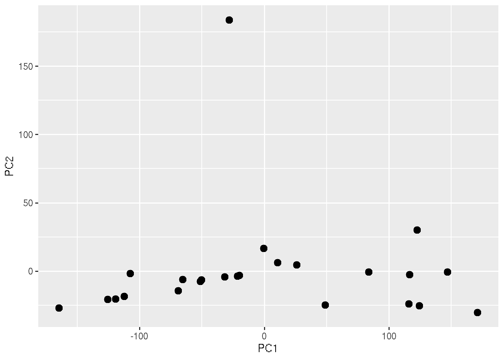
In the above plot, each points represent each sample. But we cannot see which ones are healthy and COVID19. To add that information, lets color the points based on the sample Group.
ggplot(PC_Cord, aes(x=PC1, y=PC2,colour = Group)) + geom_point(size=3)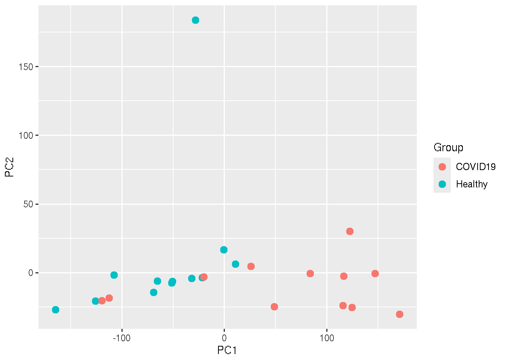
In an ideal situation, we expect that all the healthy samples will cluster nearby and all the COVID19 will cluster together.
Let us change the color of the points.
ggplot(PC_Cord, aes(x=PC1, y=PC2,colour = Group)) + geom_point(size=3)+
scale_color_manual(values=c("Healthy"="#56B4E9", "COVID19"="red"))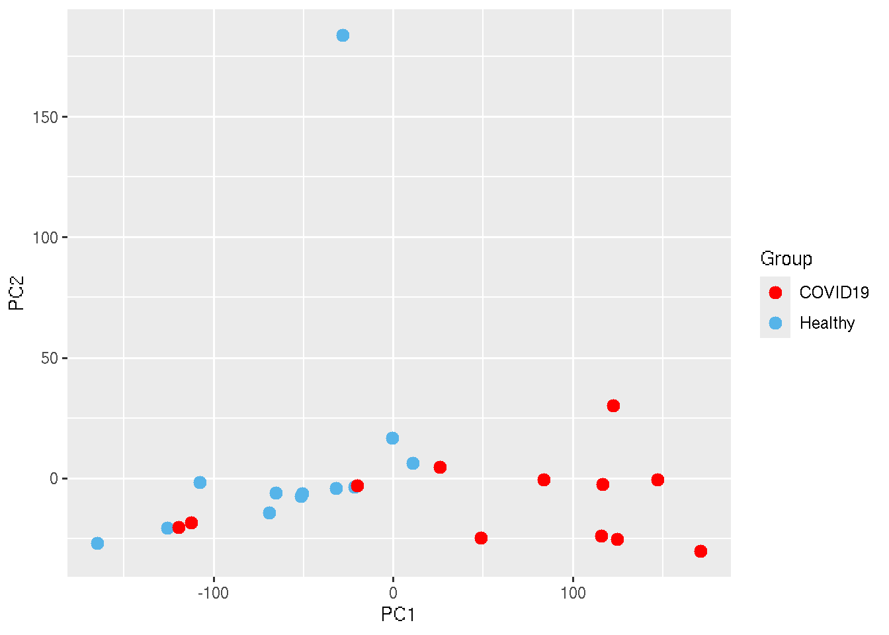
UMAP (Uniform Manifold Approximation and Projection) is a non-linear dimensionality reduction technique that focuses on preserving both local and global structures of data when projecting it into a lower-dimensional space. Unlike PCA, which is linear and emphasizes variance, UMAP excels at capturing complex, non-linear relationships and is particularly effective for visualizing clusters in high-dimensional data.
UMAP reduces the dimensions of the data into two reduced dimensions.
We can plot those on a x-y scatter plot to visualize the sample
distribution. We use the R package umap.
library(umap)
library(ggplot2)
data=read.delim("ProtCodingTPM.txt",header=TRUE,row.names = 1,check.names = FALSE)
Res_umap = umap(t(data))
Design=read.delim("Design.txt",row.names = 1)
# As in the case PCA, umap() also returns an object with several elements. Among them "layout" contains the reduced dimensions of the data which we need to plot. UMAP reduced the dimensions into two reduced dimension, and those can be plotted on x and y axis of a scatter plot.
Res_umapRes=as.data.frame(Res_umap$layout)
Res_umapRes$Group=Design$Group
Res_umapRes$Age=Design$Age
Res_umapRes$Gender=Design$Gender
Res_umapRes$BMI=Design$BMI
ggplot(Res_umapRes, aes(x=V1, y=V2,colour = Group)) + geom_point(size=3)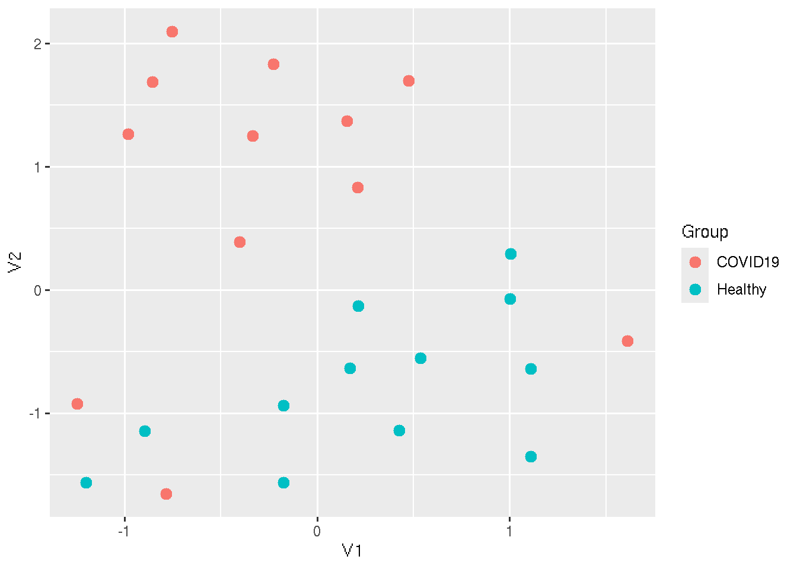
# To save the UMAP cordinates to a file
write.table(Res_umapRes,file="UMAP_Cordinates_TPM.txt",sep="\t",col.names = NA,quote = FALSE)Differential gene expression (DGE) refers to the process of identifying genes that are expressed at different levels across distinct experimental conditions or groups, such as healthy vs. diseased tissues. The goal is to determine which genes show significant changes in their expression patterns, providing insights into biological processes and pathways that may be altered in response to certain conditions.
The expected results from a DGE analysis typically include a list of genes with associated statistics like fold change, p-values, and adjusted p-values (FDR) that indicate the magnitude and significance of expression differences. Genes with a high fold change and low adjusted p-values are considered differentially expressed.
Performing DGE is essential in identifying biomarkers, understanding disease mechanisms, and uncovering potential therapeutic targets. We use the R package DESeq2 for this analysis. It models gene expression data, accounting for biological variability, and provides robust statistical testing to identify differentially expressed genes, making it ideal for RNA-seq data analysis.
library(DESeq2)
library(dplyr)
# Loading our sample details / Experiment design
Design=read.delim("Design.txt",row.names = 1)
# Loading the count data. Deseq2 requires unprocessed raw read count data. The package performs its own normalization to account for various biases present in the data
Count=read.delim("ProtCodingCount.txt",row.names = 1)
Dq2_Matrix=DESeqDataSetFromMatrix(countData = Count, colData = Design, design = ~Group)
Dq2_Obj=DESeq(Dq2_Matrix)
Dq2_Results=results(object = Dq2_Obj,contrast = c("Group","COVID19","Healthy"))The dataframe Dq2_Results has the results. Open it and inspect the results. The output will contain the statistics of all the genes inputted. We need to define a threshold for the statistical significance. Lets say, we define down-regulation of genes when the gene has padj < 0.05 and Log2Foldchange <= -1. and up-regulation is when a gene has padj < 0.05 and Log2Foldchange >= 1. We can add a extra column in the data frame to add the significance of the gene expression.
Dq2_Results$Significance="Non Significant"
Dq2_Results$Significance[Dq2_Results$padj < 0.05 & Dq2_Results$log2FoldChange >= 1]="Up regulated in COVID compared to HC"
Dq2_Results$Significance[Dq2_Results$padj < 0.05 & Dq2_Results$log2FoldChange <= -1]="Down regulated in COVID compared to HC"
# counting number of down regulated and up-regulated genes.
as.data.frame(Dq2_Results) %>%
group_by(Significance) %>%
summarise(Count = length(Significance))We have merged the gene name and gene ID together in the previous step. now we need to split it becuase we need gene names to perform further analysis. And also it is the name we are reporting in the results.
df_split <- do.call(rbind, strsplit(rownames(Dq2_Results), "_"))
Dq2_Results$ID=df_split[, 1]
Dq2_Results$GeneName=df_split[, 2]
write.table(Dq2_Results,file="Results_Covid_vs_HC.txt",sep="\t",col.names = NA,quote = FALSE)After identifying significanly regulated genes we can find what are their function. Gene-set enrichment analysis is a way of understanding which biological processes or pathways that are active or important in a set of genes you are studying. Imagine you have a list of genes that behave differently under certain conditions, like in a disease versus a healthy state (significantly regulated). Instead of looking at each gene individually, gene-set enrichment helps you look at groups of genes that work together to perform a specific function such as anti-viral response for example.
These groups of genes, called gene sets, are already known to be involved in specific tasks, like repairing DNA, helping cells grow, or processing nutrients. Gene-set enrichment check if many of the genes from any of these known groups are showing up in your list of significanlty regulated genes more than you’d expect by chance.
For example, if you find that many genes involved in the immune response are active in a disease state, gene-set enrichment would highlight that, giving you insights into which biological processes are likely at play. Resources like Gene Ontology (GO) or KEGG pathways provide these predefined groups of genes that are associated with specific biological functions or processes.
In simple terms, it helps you see patterns in your data by showing which groups of genes are “working together” more than usual, helping researchers understand the biological processes driving the differences in gene behavior.
We use the tool Enrichr for performing gene-set
enrichment. There is an online version of the tool and R implementation
are available. You can do either way. Link to the online version is here
The enrichr provided variety of gene-sets. Check the Libraries section of the website. The gene-set should be chosen based on your objective. We can choose MSigDB_Hallmark_2020 gene-set since our objective to find molecular pathways altered in COVID19. The hallmark gene-set is more clean and manually curated ideal for our purpose.
R package enrichR need to be installed if you want to do
it in R.
library(enrichR)
# Below code will fetch all availble gene-sets.
dbs <- listEnrichrDbs()
# check the available gene-sets
dbs$libraryName
# Read our differential expression results. Since here the input is the names of genes significantly regulated
Res=read.delim("Results_Covid_vs_HC.txt",row.names = 1)
Significant=subset(Res,Significance == "Up regulated in COVID compared to HC" | Significance == "Down regulated in COVID compared to HC" )
# Get the names of all significantly regulated genes and make a vector.
Genes=as.vector(Significant$GeneName)
# We chose MSigDB_Hallmark_2020 gene-sets
enrichResults <- enrichr(Genes, "MSigDB_Hallmark_2020")
# Save the analysis results
write.table(enrichResults$MSigDB_Hallmark_2020,file="GSEA_Results.txt",col.names = NA,sep="\t",quote = FALSE)Check the results to see whether it makes sense.
We have now finished all the planned analysis. In this sections we will see how to make some figures to represent our findings.
Volcano plot is a commonly used visualization of differential gene expression analysis results. It is basically a x-y scatter plot. When plotted it will look like an exploding vocano hence it is called volcano plot. We plot log2 fold change on the x-axis and negative log10 scaled padj values on the y-axis.
Let us see the code to make a volcano plot step by step
library(ggplot2)
data=read.delim("Results_Covid_vs_HC.txt",row.names = 1)
ggplot(data, aes(x=log2FoldChange, y=-log10(padj))) + geom_point()## Warning: Removed 4488 rows containing missing values or values outside the scale range (`geom_point()`).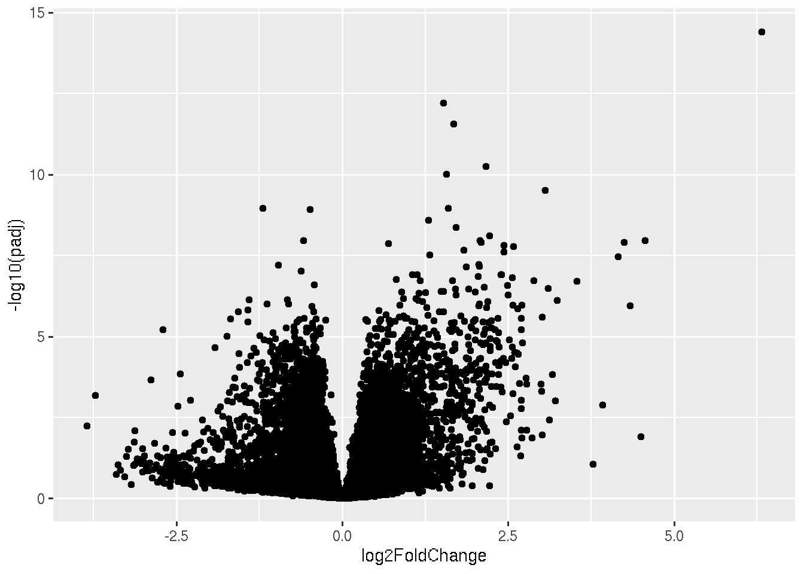
In the plot, each dots represent each genes. Now lets give significantly down regulated genes, a different color. Remember our condition for downregulated genes is padj < 0.05 & Log2foldchane <-1.
library(ggplot2)
data=read.delim("Results_Covid_vs_HC.txt",row.names = 1)
ggplot(data, aes(x=log2FoldChange, y=-log10(padj))) + geom_point(data=subset(data, padj < 0.05 & log2FoldChange < -1),color="darkgreen")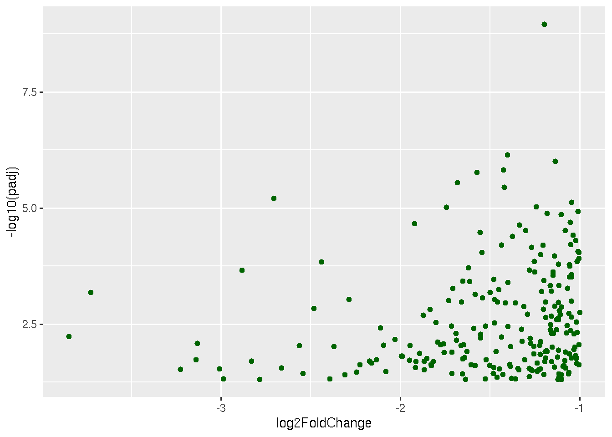
The above plot shows only significantly down regulated genes. Now to the same plot lets add up-regulated genes too.
library(ggplot2)
data=read.delim("Results_Covid_vs_HC.txt",row.names = 1)
ggplot(data, aes(x=log2FoldChange, y=-log10(padj))) +
geom_point(data=subset(data, padj < 0.05 & log2FoldChange < -1),color="darkgreen") +
geom_point(data=subset(data, padj < 0.05 & log2FoldChange > 1),color="darkred")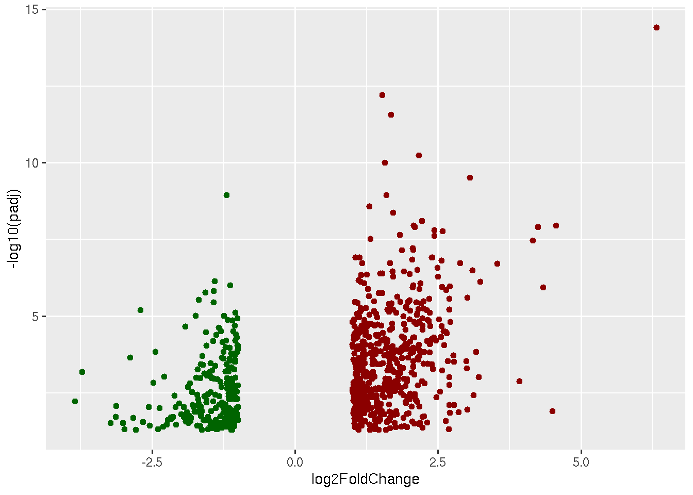
Now what is left to plot are non-significant genes, which are genes with padj > 0.05 and genes with padj < 0.05 and |log2foldchange| > 0 and |log2foldchange| < 1.
library(ggplot2)
data=read.delim("Results_Covid_vs_HC.txt",row.names = 1)
ggplot(data, aes(x=log2FoldChange, y=-log10(padj))) +
geom_point(data=subset(data, padj < 0.05 & log2FoldChange < -1),color="darkgreen") +
geom_point(data=subset(data, padj < 0.05 & log2FoldChange > 1),color="darkred") +
geom_point(data=subset(data, padj < 0.05 & log2FoldChange < 1 & log2FoldChange > 0),color="darkgrey")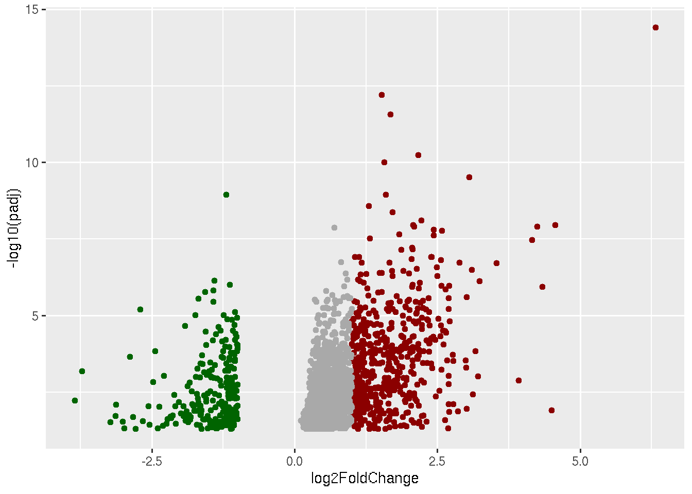
library(ggplot2)
data=read.delim("Results_Covid_vs_HC.txt",row.names = 1)
ggplot(data, aes(x=log2FoldChange, y=-log10(padj))) +
geom_point(data=subset(data, padj < 0.05 & log2FoldChange < -1),color="darkgreen") +
geom_point(data=subset(data, padj < 0.05 & log2FoldChange > 1),color="darkred") +
geom_point(data=subset(data, padj < 0.05 & log2FoldChange < 1 & log2FoldChange > 0),color="darkgrey")+
geom_point(data=subset(data, padj < 0.05 & log2FoldChange > -1 & log2FoldChange < 0),color="darkgrey")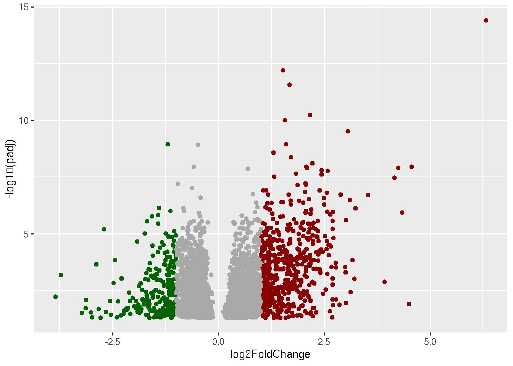
library(ggplot2)
data=read.delim("Results_Covid_vs_HC.txt",row.names = 1)
ggplot(data, aes(x=log2FoldChange, y=-log10(padj))) +
geom_point(data=subset(data, padj < 0.05 & log2FoldChange < -1),color="darkgreen") +
geom_point(data=subset(data, padj < 0.05 & log2FoldChange > 1),color="darkred") +
geom_point(data=subset(data, padj < 0.05 & log2FoldChange < 1 & log2FoldChange > 0),color="darkgrey")+
geom_point(data=subset(data, padj < 0.05 & log2FoldChange > -1 & log2FoldChange < 0),color="darkgrey")+
geom_point(data=subset(data, padj > 0.05),color="darkgrey")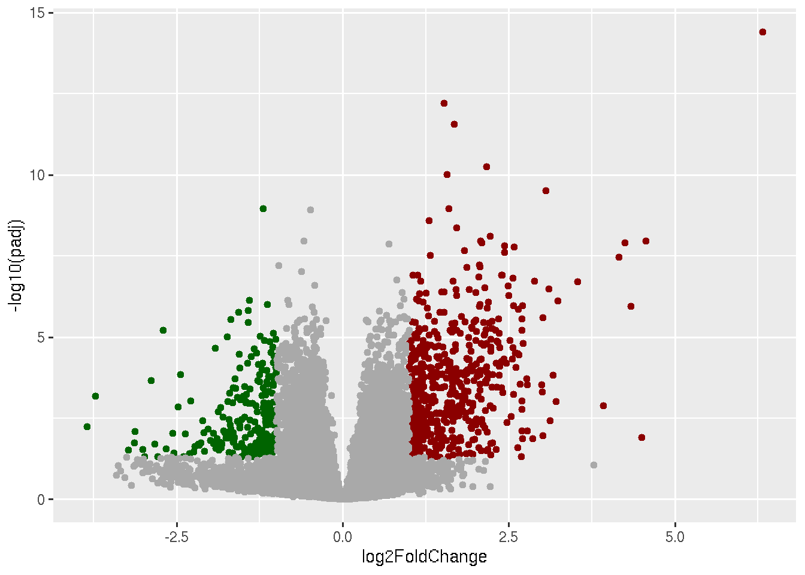
This is our final volcano plot. Think of anyways to make it any better.
If you need to save the plot in a pdf file.
library(ggplot2)
data=read.delim("Results_Covid_vs_HC.txt",row.names = 1)
pdf("Volcanoplot.pdf")
ggplot(data, aes(x=log2FoldChange, y=-log10(padj))) +
geom_point(data=subset(data, padj < 0.05 & log2FoldChange < -1),color="darkgreen") +
geom_point(data=subset(data, padj < 0.05 & log2FoldChange > 1),color="darkred") +
geom_point(data=subset(data, padj < 0.05 & log2FoldChange < 1 & log2FoldChange > 0),color="darkgrey")+
geom_point(data=subset(data, padj < 0.05 & log2FoldChange > -1 & log2FoldChange < 0),color="darkgrey")+
geom_point(data=subset(data, padj > 0.05),color="darkgrey")
dev.off()Main statistics associated with the GSEA results are the overlap and the adjusted pvalues. If a pathway-X has overlap value 18/200 means that, In Pathway-X there are in total 200 genes based in experimental evidences and out of those 200 genes, 18 genes are significantly regulated in our analysis.
A bargraph can be a very basic visualization of the GSEA results.
Pwy=read.delim("GSEA_Results.txt",row.names = 1)
SigniPwy=subset(Pwy,Adjusted.P.value < 0.05)
ggplot(data=SigniPwy, aes(x=Term, y=-log10(Adjusted.P.value))) + geom_bar(stat="identity") + coord_flip()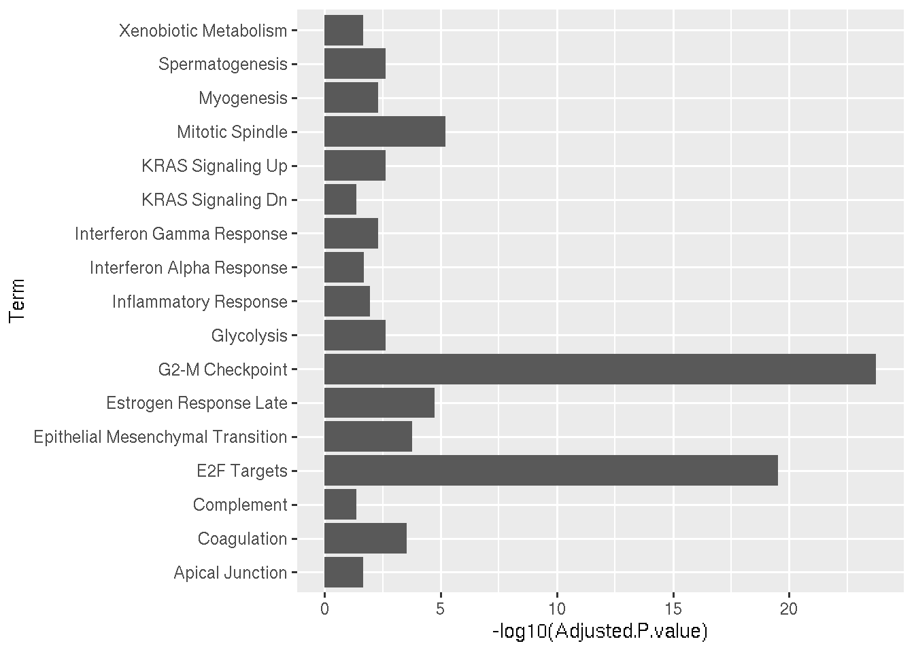
Lets arrange the pathways in such was that most significant pathways appear on the top.
Pwy=read.delim("GSEA_Results.txt",row.names = 1)
SigniPwy=subset(Pwy,Adjusted.P.value < 0.05)
ggplot(data=SigniPwy, aes(x=reorder(Term, -log10(Adjusted.P.value)), y=-log10(Adjusted.P.value))) + geom_bar(stat="identity") + coord_flip()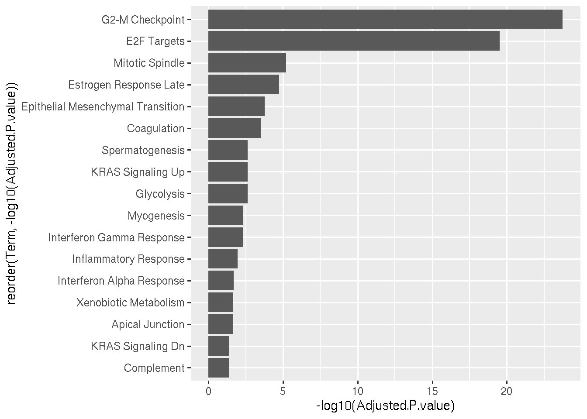
Let us add color and change the x-axis title.
Pwy=read.delim("GSEA_Results.txt",row.names = 1)
SigniPwy=subset(Pwy,Adjusted.P.value < 0.05)
ggplot(data=SigniPwy, aes(x=reorder(Term, -log10(Adjusted.P.value)), y=-log10(Adjusted.P.value))) + geom_bar(stat="identity",fill="#4682B4") + coord_flip()+xlab("Pathway Name")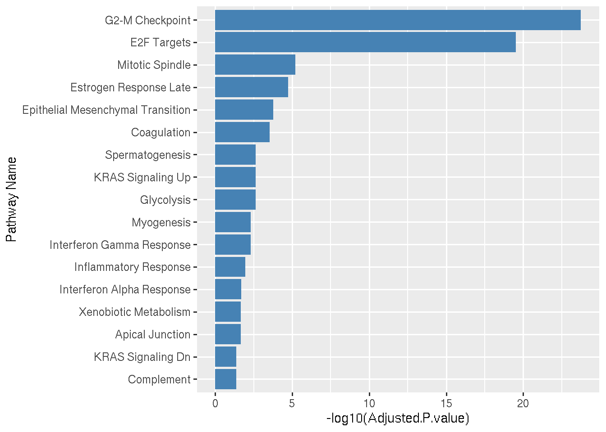
A heatmap is a graphical representation of data where individual values are represented by colors, making it easy to visualize patterns and trends. In the context of gene expression pattern visualization, heatmaps are commonly used to display the expression levels of multiple genes across different samples or conditions. Each cell in the heatmap represents the expression level of a gene in a particular sample, with color intensity indicating high or low expression. This allows researchers to quickly identify clusters of genes with similar expression profiles, detect differential expression patterns, and explore relationships between genes and experimental conditions, such as disease states or treatments.
R package ComplexHeatmap can be used to make clean and
quality heatmaps.
Let us make a heatmap to show the expression pattern of significantly regulated genes belong to glycolysis pathway in COVID19 and Healthy samples.
You can find the glycolysis pathway genes which are significantly
regulated in GSEA results. Look for the column Genes.
# Genes in Glycolysis pathways
Genes=c("B4GALT2","CHPF","IGFBP3","PGAM2","SPAG4","PLOD2","HMMR","NOL3","CENPA","AURKA","TPST1","NT5E","CLDN9","DEPDC1","CDK1","SDC1","ANG","KIF20A","MET")
# Now we need to fetch normalized expression values of the above genes in each samples. We have normalized data using several methods. For now let us take the TPM normalized values.
TPM=read.delim("ProtCodingTPM.txt",row.names = 1)
# The row names are concatenation of Gene IDs and Gene Names. Let us split that into two columns, because we need fetch expression values based on our input gene names.
TPM_split <- do.call(rbind, strsplit(rownames(TPM), "_"))## Warning in (function (..., deparse.level = 1) : number of columns of result is not a multiple of vector
## length (arg 1)TPM$ID=TPM_split[, 1]
TPM$GeneName=TPM_split[, 2]
# Now fetch the expression values of our input gene names.
GlycoGeneTPM = TPM[TPM$GeneName %in% Genes, ]
# Set the Gene name as rownames of the dataframe
rownames(GlycoGeneTPM)=GlycoGeneTPM$GeneName
# Remove the extra columns
GlycoGeneTPM$ID=NULL
GlycoGeneTPM$GeneName=NULL
# Now GlycoGeneTPM has the data to make the heatmap.Below is the code to make heatmap. We plot sample names on the columns and Gene names on rows of the heatmap.
library(circlize)## ========================================
## circlize version 0.4.16
## CRAN page: https://cran.r-project.org/package=circlize
## Github page: https://github.com/jokergoo/circlize
## Documentation: https://jokergoo.github.io/circlize_book/book/
##
## If you use it in published research, please cite:
## Gu, Z. circlize implements and enhances circular visualization
## in R. Bioinformatics 2014.
##
## This message can be suppressed by:
## suppressPackageStartupMessages(library(circlize))
## ========================================library(ComplexHeatmap)## Loading required package: grid## ========================================
## ComplexHeatmap version 2.20.0
## Bioconductor page: http://bioconductor.org/packages/ComplexHeatmap/
## Github page: https://github.com/jokergoo/ComplexHeatmap
## Documentation: http://jokergoo.github.io/ComplexHeatmap-reference
##
## If you use it in published research, please cite either one:
## - Gu, Z. Complex Heatmap Visualization. iMeta 2022.
## - Gu, Z. Complex heatmaps reveal patterns and correlations in multidimensional
## genomic data. Bioinformatics 2016.
##
##
## The new InteractiveComplexHeatmap package can directly export static
## complex heatmaps into an interactive Shiny app with zero effort. Have a try!
##
## This message can be suppressed by:
## suppressPackageStartupMessages(library(ComplexHeatmap))
## ========================================# Define the color range
col_tpm = colorRamp2(c(2,1,0.5,0,-0.5,-1,-2),c("#ffff19","#99990f","#4c4c07","white","#203470","#3454b4","#4169e1"))
# Here we are scaling the TPM values using scale() function, so that the under expressed genes will be negative values and over expressed genes will be positive values. Once it is scaled it is called z-score.
Heatmap(as.matrix(t(scale(t(GlycoGeneTPM)))),col=col_tpm,
name = "z-score",row_names_gp=gpar(fontsize = 6),
height = unit(5, "cm"),width = unit(8, "cm"))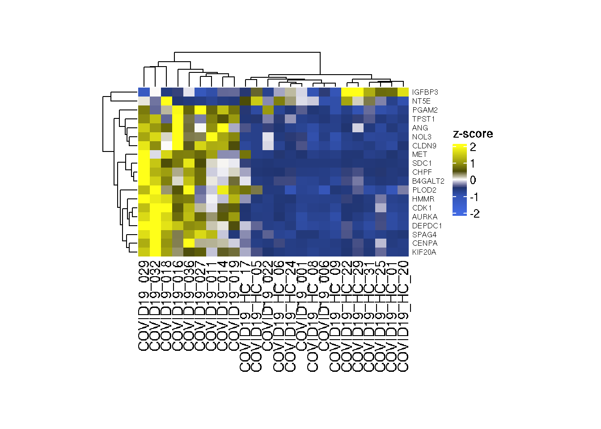
Let us try to group COVID19 samples and Healthy samples together. For this purpose we need to add the sample annotaion on the heatmap
library(circlize)
library(ComplexHeatmap)
# Define the color range
col_tpm = colorRamp2(c(2,1,0.5,0,-0.5,-1,-2),c("#ffff19","#99990f","#4c4c07","white","#203470","#3454b4","#4169e1"))
chrt=read.delim("Design.txt",row.names = 1)
#Lets remove columns except Group.
chrt$Age=NULL
chrt$Gender=NULL
chrt$BMI=NULL
chrt_anno = HeatmapAnnotation(df = chrt, simple_anno_size = unit(0.2, "cm"),annotation_name_side = "left",
annotation_name_gp = gpar(fontsize = 0),
annotation_legend_param = list(grid_width = unit(0.3, "cm"),
grid_height = unit(0.3, "cm"),
title_gp = gpar(fontsize = 8),
labels_gp = gpar(fontsize = 8)),
col = list(Group=c("COVID19"="#ffa500","Healthy"="#4682b4")))
Heatmap(as.matrix(t(scale(t(GlycoGeneTPM)))),col=col_tpm,top_annotation = chrt_anno,
column_split = chrt$Group,
name = "z-score",row_names_gp=gpar(fontsize = 6),
height = unit(5, "cm"),width = unit(8, "cm"))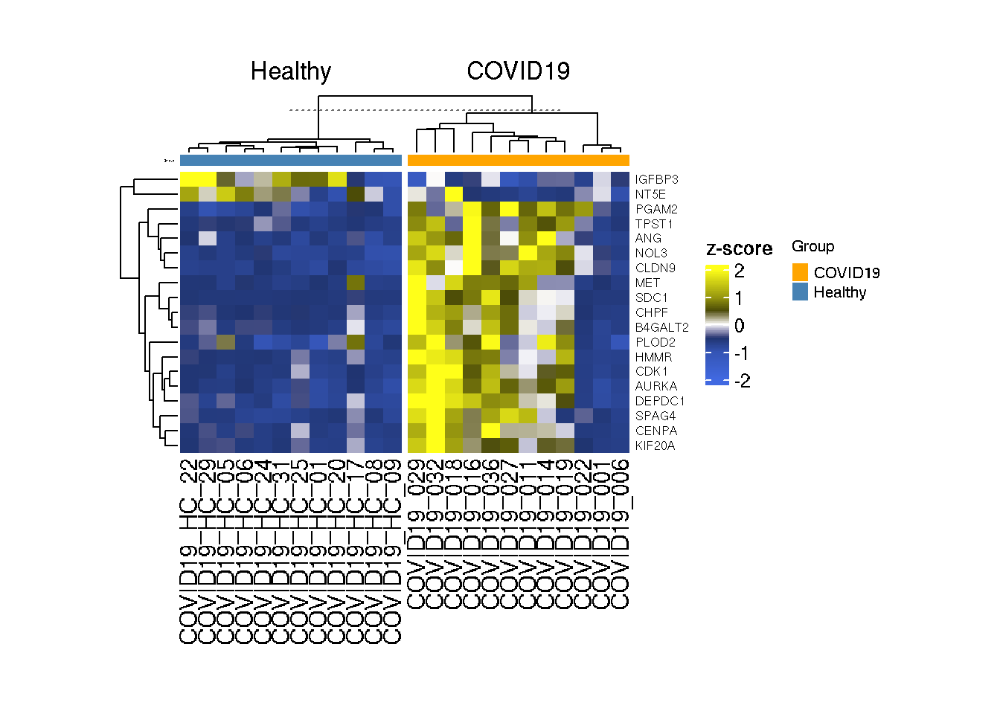
If you want to remove the sample IDs,
library(circlize)
library(ComplexHeatmap)
# Define the color range
col_tpm = colorRamp2(c(2,1,0.5,0,-0.5,-1,-2),c("#ffff19","#99990f","#4c4c07","white","#203470","#3454b4","#4169e1"))
chrt=read.delim("Design.txt",row.names = 1)
#Lets remove columns except Group.
chrt$Age=NULL
chrt$Gender=NULL
chrt$BMI=NULL
chrt_anno = HeatmapAnnotation(df = chrt, simple_anno_size = unit(0.2, "cm"),
col = list(Group=c("COVID19"="#ffa500","Healthy"="#4682b4")))
Heatmap(as.matrix(t(scale(t(GlycoGeneTPM)))),col=col_tpm,
top_annotation = chrt_anno,
column_split = chrt$Group,
name = "z-score",row_names_gp=gpar(fontsize = 6),
height = unit(5, "cm"),width = unit(8, "cm"),
show_column_names = FALSE)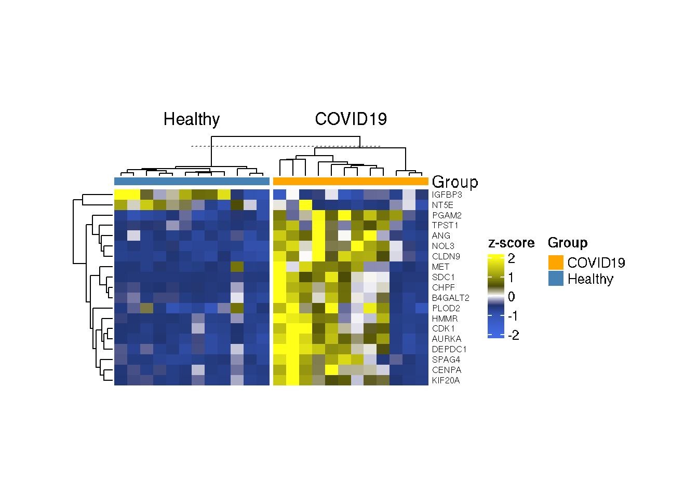
What can be interpreted from the heatmap? Does it make sense?